În stînga este slide-ul din curs, în dreapta aceeași figură, calculată în browser din aceleași date. Butonul ▶ modifică parametrul pas cu pas.
Date financiare: surse și calitate · De la prețuri la randamente · Randamente simple și logaritmice · Randamente pe mai multe perioade și ale portofoliilor · Statisticile descriptive ale randamentelor · Indicatori de performanță
Date financiare: surse și calitate
Date reale: Banca Transilvania, prețul de închidere și prețul ajustat
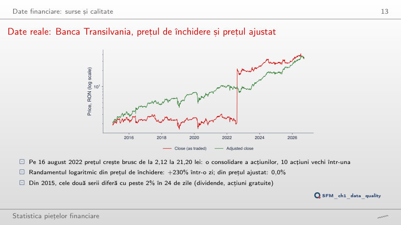
Răspuns
11 zile. Pe lîngă consolidarea din 16 august 2022 (+230,3% din prețul de închidere, 0,0% din prețul ajustat), alte 10 zile au o diferență de peste 10 puncte procentuale între cele două randamente logaritmice, toate cu prețul de închidere în scădere; cea mai mare, 19,5 puncte procentuale, pe 3 august 2017. Peste 20% rămîne doar consolidarea. Un randament calculat din prețul de închidere ar trata aceste zile drept pierderi ale acționarilor, deși valoarea deținerii nu s-a modificat.
Dividendele contează: BET și BET-TR
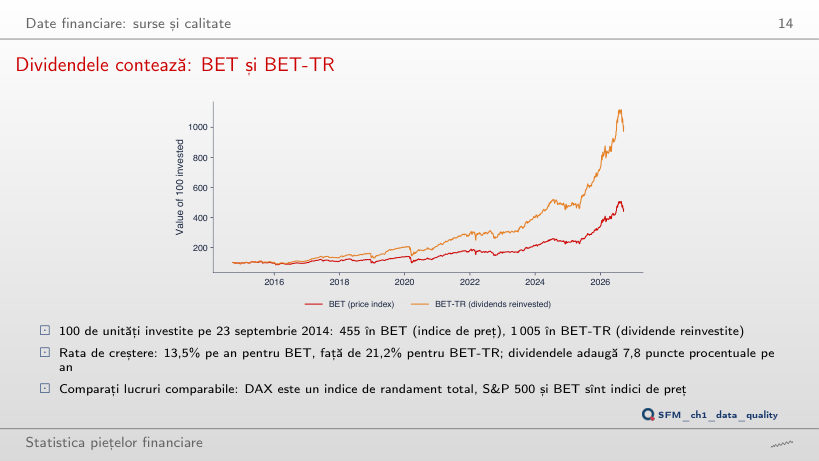
Răspuns
Cu 8,3 puncte procentuale: 29,9% pe an față de 21,6%. Valorile finale sînt 342 și 251, o diferență de 91 de unități, mult mai mică decît 1 005 față de 455 pentru investiția din 23 septembrie 2014. Diferența dintre ratele de creștere rămîne însă între 7,5 și 8,4 puncte procentuale pentru orice an de început: dividendele adaugă în fiecare an aproximativ același randament, iar efectul lor asupra averii se acumulează în timp.
Erori în date: două serii EUR/RON
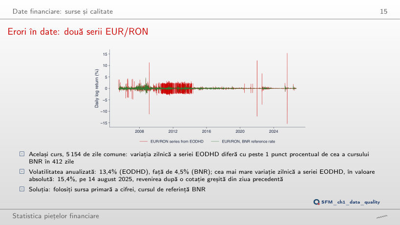
Răspuns
Circa 4,7%, aproape de 4,3%, volatilitatea cursului BNR în aceleași zile. Volatilitatea depinde de pătratul abaterilor, deci cîteva sute de cotații greșite o triplează. Dintre cele 412 zile, 307 sînt în 2010–2013. Peste 2 puncte procentuale diferă 283 de zile, peste 5 puncte procentuale 10 zile.
De la prețuri la randamente
S&P 500: nivelul prețului și randamentele zilnice
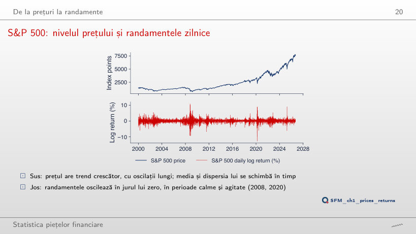
Răspuns
Media randamentelor rămîne aproape de zero, între −0,016% și 0,057% pe zi, în timp ce media prețului crește de la 1 145 la 5 235 de puncte. Abaterea standard a randamentelor variază însă între 0,97% și 1,53% pe zi: randamentele oscilează în jurul unui nivel stabil, dar volatilitatea lor se schimbă în timp. Testul ADF respinge rădăcina unitară pentru randamente (statistica −14,3), nu și pentru logaritmul prețului (statistica −2,08, p-value 0,56).
Randamente simple și logaritmice
Randamente simple și logaritmice în zilele extreme
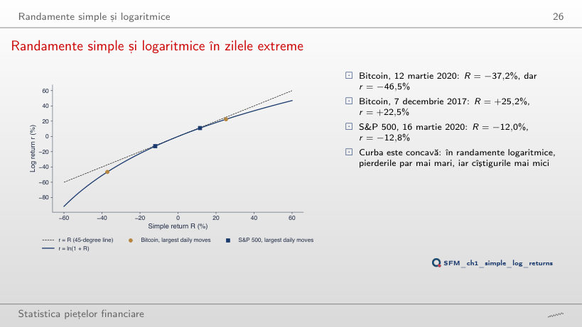
Răspuns
3,8 puncte procentuale: r = ln(0,748) = −29,0%. Funcția ln este concavă, iar diferența este mai mare pentru scăderi decît pentru creșteri de aceeași mărime. Aproximarea R²/2 = 3,2 puncte procentuale este aceeași pentru ambele semne; termenul R³/3 al seriei Taylor o corectează în sus la scăderi și în jos la creșteri. La R = −37,2% (Bitcoin, 12 martie 2020), diferența ajunge la 9,3 puncte procentuale.
Randamente pe mai multe perioade și ale portofoliilor
Evoluția a 100 de unități investite, 2015–2026
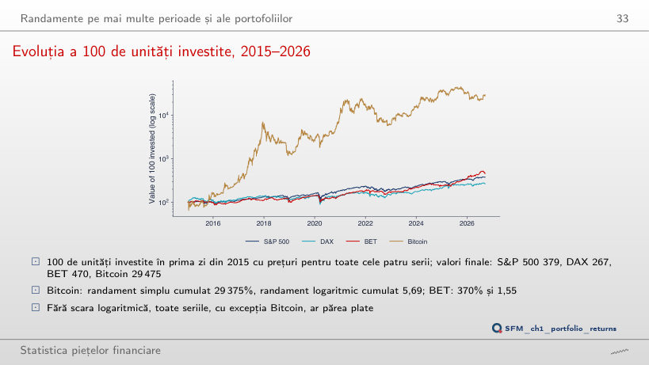
Răspuns
BET: 251, față de Bitcoin 170, S&P 500 161 și DAX 159. Pentru investiția din 2015, Bitcoin ajunge la 29 475, iar pentru cea din 2018 la 592, tot pe primul loc. Clasamentul după randamentul cumulat depinde de data de început.
Statisticile descriptive ale randamentelor
Histogramele față de distribuția Normală
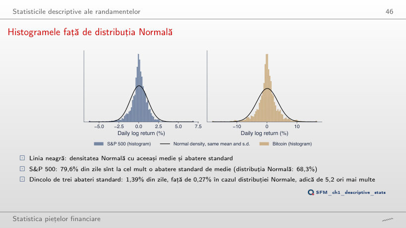
Răspuns
De circa 113 ori: 21 de zile din 2 943 (0,71%), față de 0,0063% pentru distribuția Normală. Raportul crește cu pragul, deoarece coada distribuției Normale scade foarte repede; la Bitcoin raportul este 103 (28 de zile). Frecvența zilelor extreme nu rezultă din abaterea standard prin distribuția Normală.
Volatilitatea se schimbă în timp
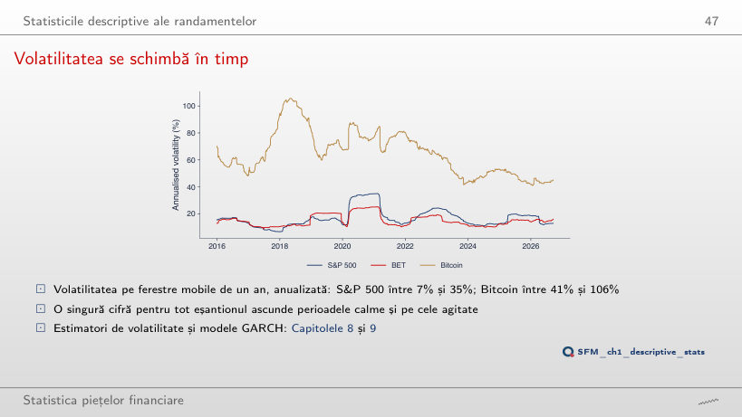
Răspuns
97,5%, în fereastra care se termină pe 6 aprilie 2020. O fereastră scurtă urmărește rapid o perioadă agitată, cum a fost martie 2020; o fereastră de un an o diluează cu lunile calme dinainte și de după. Minimul scade și el, de la 6,7% la 3,5%. O fereastră scurtă reacționează repede, dar estimarea ei are o eroare mai mare.
Indicatori de performanță
Raportul Sharpe cu intervale de încredere 95%, 2015–2026
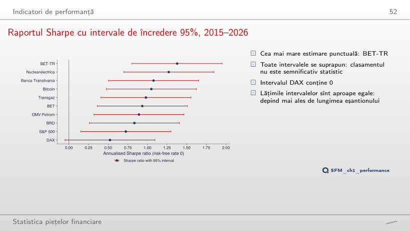
Răspuns
Circa ± 1,02, aproximativ 1,96/√3,7. Eroarea standard a raportului Sharpe anual scade ca 1/√Y, cu Y numărul de ani, oricîte observații zilnice ar conține eșantionul. Cu începutul în 2023, intervalul Nuclearelectrica conține 0, iar intervalul DAX nu mai conține 0.
Drawdown-uri pe întreaga istorie
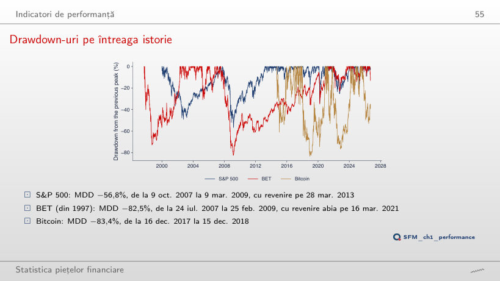
Răspuns
18%, aproape o zi din cinci; S&P 500 doar 0,3%, Bitcoin 31,6%. O scădere de 50% cere un cîștig de 100% pentru revenire. Adîncimea drawdown-ului maxim (−82,5% la BET) nu spune cît durează scăderea; ponderea zilelor sub prag arată durata.
Volatility drag pe date reale
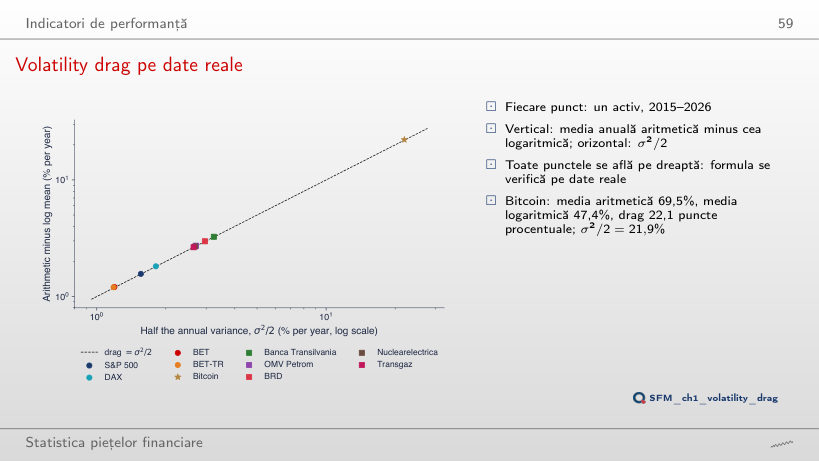
Răspuns
Nu. Drag-ul este σ²/2 = 18%, de patru ori mai mare, iar rata de creștere este 10% − 18% = −8% pe an: după 10 ani 1 leu devine 0,45 lei. O medie aritmetică pozitivă nu garantează creșterea averii. Pe date reale, drag-ul Bitcoin este 22,1 puncte procentuale, aproape de σ²/2 = 21,9%.
Risc și randament, 2015–2026
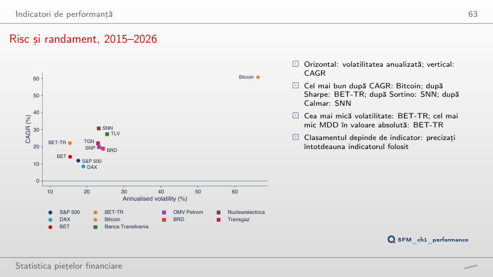
Răspuns
Nuclearelectrica (SNN), cu 40,7% pe an; tot SNN are în acest eșantion cel mai mare raport Sharpe, Sortino și Calmar. CAGR-ul Bitcoin scade de la 60,6% la 22,7%, deoarece eșantionul începe la două săptămîni după vîrful din 16 decembrie 2017. Clasamentul depinde de indicator și de perioadă.
Prețuri zilnice EODHD pînă la 18 septembrie 2026: indicii și Bitcoin la închidere, acțiunile BVB ajustate pentru dividende și operațiuni corporative; cursul de referință EUR/RON al BNR. Perioada de comparație: din 2015; S&P 500 din 2000, BET din 1997 și Bitcoin din 2014 pe istoria completă.